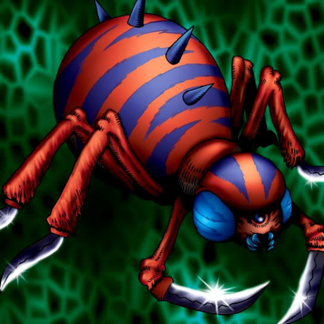

Mechanical Spider

STATS
ATK: 400
DEF: 500DECK COST
Deck Cost per Card: 9Fusion List (25 Possible Fusions)
- Mechanical Spider + Air Marmot of Nefariousness = Giga-tech Wolf
- Mechanical Spider + Armed Ninja = Cyber Soldier
- Mechanical Spider + Darkfire Dragon = Metal Dragon
- Mechanical Spider + Dragon Zombie = Metal Dragon
- Mechanical Spider + Eyearmor = Cyber Soldier
- Mechanical Spider + Gazelle the King of Mythical Beasts = Dice Armadillo
- Mechanical Spider + Hane-Hane = Dice Armadillo
- Mechanical Spider + Hyo = Cyber Soldier
- Mechanical Spider + Kagemusha of the Blue Flame = Cyber Soldier
- Mechanical Spider + M-Warrior #1 = Cyber Soldier
- Mechanical Spider + M-Warrior #2 = Cyber Soldier
- Mechanical Spider + Monster Egg = Cyber Soldier
- Mechanical Spider + Mystic Lamp = Disk Magician
- Mechanical Spider + Mystical Sheep #1 = Giga-tech Wolf
- Mechanical Spider + Obese Marmot of Nefariousness = Giga-tech Wolf
- Mechanical Spider + One-Eyed Shield Dragon = Metal Dragon
- Mechanical Spider + Queen's Double = Cyber Soldier
- Mechanical Spider + Saggi the Dark Clown = Disk Magician
- Mechanical Spider + Spike Seadra = Metal Dragon
- Mechanical Spider + Swordsman from a Foreign Land = Cyber Soldier
- Mechanical Spider + Tomozaurus = Cyber Saurus
- Mechanical Spider + Trakadon = Cyber Saurus
- Mechanical Spider + White Dolphin = Misairuzame
- Mechanical Spider + Wicked Dragon with the Ersatz Head = Metal Dragon
- Mechanical Spider + Wood Clown = Cyber Soldier